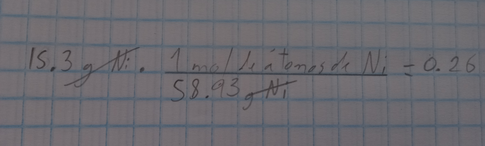

Un mol 6.022 X 1023 moléculas elementales de agua unidas. El número competo es 602200000000000000000000. El mol en estado gaseoso tiene un volumen igual a 22.4 litros de volumen, aunque con los gases reales varia ligeramente como por ejemplo el CO2 que tiene un volumen de 22.3 litros.
Ejemplo:
¿Cuántos mol de átomos hay en 15.3g de níquel?
La masa átomica del níquel es de 58.93 uma, lo que significa que son 85.93g/mol
Operamos
